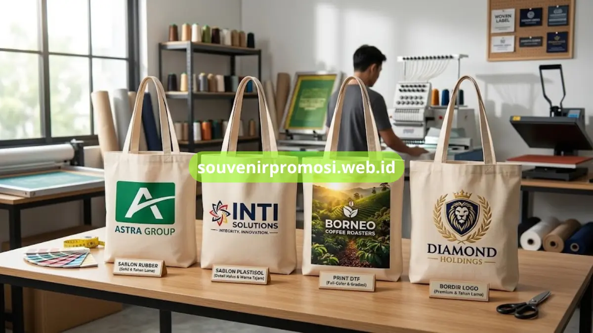
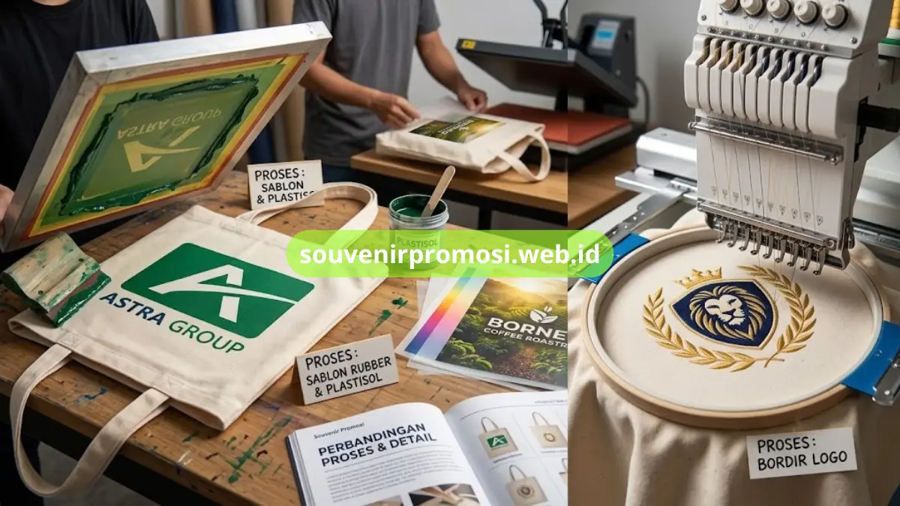

Teknik cetak logo tote bag kanvas custom korporat meliputi sablon rubber, sablon plastisol, print DTF, dan bordir, yang masing-masing memiliki karakteristik hasil akhir berbeda.
Pemilihan teknik cetak berpengaruh pada ketahanan, tampilan warna, dan biaya produksi tote bag kanvas yang dipesan. Katalog teknik cetak lengkap tersedia melalui Souvenir Promosi untuk membantu perusahaan menentukan opsi paling sesuai dengan desain logo mereka.
Poin Penting
- Teknik cetak logo tote bag kanvas mencakup sablon rubber, sablon plastisol, print DTF, dan bordir.
- Sablon rubber cocok untuk logo sederhana dengan satu hingga dua warna dominan.
- Sablon plastisol lebih sesuai untuk detail tipografi kecil yang kompleks.
- Print DTF direkomendasikan untuk desain dengan gradasi warna atau lebih dari tiga warna.
- Bordir logo memberikan kesan premium untuk souvenir eksklusif klien atau tamu VIP.
Daftar Isi
Sablon Rubber untuk Hasil Cetak Solid
Sablon rubber menghasilkan lapisan cetak yang sedikit timbul di atas permukaan kanvas dengan warna solid yang tahan lama. Teknik ini banyak digunakan untuk logo dengan satu hingga dua warna dominan, seperti logo perusahaan pada umumnya.
Karakteristik Hasil Sablon Rubber
Lapisan sablon rubber cenderung lebih tebal dibandingkan sablon plastisol sehingga memberikan kesan visual yang lebih solid. Teknik ini cocok untuk logo dengan bentuk sederhana dan warna terbatas, serta banyak dipilih untuk souvenir korporat dalam jumlah besar.
Sablon Plastisol untuk Detail Lebih Halus
Sablon plastisol menghasilkan cetakan yang lebih tipis dan halus dibandingkan sablon rubber, sehingga cocok digunakan pada desain dengan garis atau detail yang lebih kompleks. Teknik ini umumnya dipilih ketika logo perusahaan memiliki elemen tipografi kecil yang perlu tetap terbaca jelas pada permukaan kanvas.

Print DTF untuk Desain Gradasi Warna
Print DTF atau Direct to Film memungkinkan hasil cetakan dengan gradasi warna dan detail visual yang lebih mendekati foto asli. Teknik ini sesuai untuk kampanye promosi dengan elemen ilustrasi atau foto produk yang membutuhkan tingkat presisi warna lebih tinggi dibandingkan sablon manual.
Kapan Print DTF Lebih Direkomendasikan
Print DTF lebih direkomendasikan ketika desain logo memiliki lebih dari tiga warna atau elemen gradasi, karena teknik sablon manual memiliki keterbatasan dalam mereproduksi transisi warna secara halus.
Bordir Logo untuk Kesan Premium
Selain teknik cetak, bordir logo juga tersedia sebagai opsi tambahan untuk tote bag kanvas yang ingin menampilkan kesan lebih premium dan tahan lama secara fisik. Bordir umumnya digunakan pada logo berukuran kecil di bagian depan tas, seperti pada tote bag kombinasi kulit sintetis.
Teknik ini memberikan tekstur timbul yang berbeda dari sablon, sehingga sering dipilih untuk souvenir eksklusif bagi klien atau tamu VIP perusahaan.
Memilih Teknik Cetak Berdasarkan Jenis Desain Logo
Setiap teknik cetak memiliki kecocokan berbeda tergantung kompleksitas desain logo perusahaan. Logo sederhana dengan satu hingga dua warna umumnya lebih efisien menggunakan sablon rubber, sementara desain dengan gradasi warna lebih kompleks lebih sesuai menggunakan print DTF.
Konsultasi teknik cetak yang paling sesuai dengan file desain logo dapat dilakukan langsung bersama tim produksi Souvenir Promosi sebelum proses pencetakan dimulai.
- Kecocokan teknik cetak mengikuti kompleksitas warna dan detail desain logo perusahaan.
- Sablon rubber dan plastisol sesuai untuk logo dengan warna terbatas, sementara print DTF untuk gradasi warna.
- Souvenir Promosi siap membantu konsultasi teknik cetak sebelum proses produksi dimulai.
Pesan Tote Bag Kanvas dengan Teknik Cetak Sesuai Kebutuhan
Menentukan teknik cetak yang tepat akan memengaruhi hasil akhir dan daya tahan logo pada tote bag kanvas custom perusahaan Anda. Tim Souvenir Promosi siap membantu memilihkan teknik cetak paling sesuai dengan desain dan anggaran yang tersedia.
Ajukan file desain logo Anda dan dapatkan rekomendasi teknik cetak terbaik melalui souvenirpromosi.web.id sekarang juga.